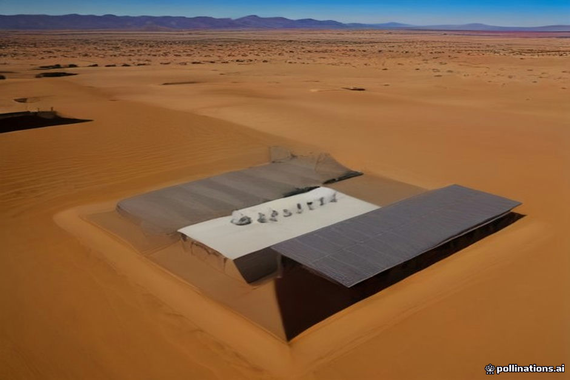

When travelers ask about electricity at our desert camp near Merzouga, they usually want to know if they can charge a phone or camera. But for a growing number of our guests, the question is clinical: how to run a CPAP machine through the night without grid power forty miles from the nearest town.
Most standard desert camps rely on a combination of diesel generators and solar battery banks. Power is rarely continuous twenty-four hours a day in every tent, and understanding the rhythm of camp electricity helps you plan your medical needs or heavy electronics charging without unexpected interruptions.
How Desert Camp Power Systems Actually Work
Erg Chebbi camps sit off the national electrical grid. Electricity is generated locally, typically via solar panels storing energy in large battery banks during the day, supplemented by diesel generators when demand spikes or when the sun is down.
During the day, solar inverters provide standard 220V Moroccan outlets (Type C and E) in the main dining tent for phones and camera batteries. However, generators are usually turned off late at night—often around midnight or 1:00 AM—to maintain the quiet atmosphere of the dunes, meaning circuits may go dead until morning.
- Standard voltage: 220V, 50Hz (European two-pin plugs)
- Main power sources: Solar arrays + diesel generator backups
- Quiet hours: Generators usually shut down overnight
Running a CPAP Machine in the Dunes
If you use a CPAP machine for sleep apnea, a camp tent that loses power at midnight presents a clear problem. You cannot rely on standard wall sockets to keep a medical device running straight through until dawn.
The most reliable solution is bringing a dedicated portable power station (such as a Jackery, EcoFlow, or a specialized CPAP battery pack) that can run your specific machine for 8 hours without AC power. Alternatively, you must inform us well in advance so we can arrange continuous power or a private inverter setup in your tent.
- Wall power is unreliable overnight as generators turn off
- Bring a dedicated portable medical battery backup
- Notify your operator before arrival to discuss specific wattage needs
Laptops, Drones, and Heavy Electronics
Content creators and professional photographers often carry laptops, multiple camera bodies, and drone batteries. While charging these during daylight hours in the dining tent is generally fine, delicate electronics are exposed to fine desert dust and fluctuating current.
Voltage drops can happen when heavy loads are placed on camp generators. We recommend using surge protectors and keeping equipment sealed in dust-proof cases when not actively charging.
- Charge heavy gear in the main dining tent during daylight
- Fine sand and dust require specialized protective sleeves
- Use surge-protecting power strips for sensitive laptops
Alternative Energy and What to Pack
Aside from your CPAP battery, packing smart helps bridge the gap between city amenities and off-grid desert realities. A high-capacity power bank (20,000mAh or greater) easily handles phones and small tablets over a multi-day trip.
For more detailed preparation regarding luggage space and what else to bring along for your journey across the Tichka Pass, check our general packing checklist.
- Pack a high-capacity portable power bank for daily use
- Bring extra dust caps and cleaning cloths for ports
- Review our luggage storage and packing guide for more tips
| Device Type | Best Way to Power It | |
|---|---|---|
| CPAP Machine | Medical sleep apnea device | Dedicated portable medical battery pack (or pre-arranged private inverter) |
| Smartphones | Standard communication | Standard camp outlets by day, personal power bank by night |
| Laptops | Work and editing | Charge in main dining tent during daylight generator/solar hours |
| Camera Batteries | Photography gear | Charge during the day; keep spares in a warm pocket at night |
| Drones | Aerial filming | Direct wall charge; note local Moroccan import/flight regulations |

Illustration, not a photograph — for the real thing, you'll have to stand on the ridge yourself.
Quick answers
A few follow-up questions travelers ask about this.
Do desert camp tents have electrical outlets inside?
Luxury camps often have bedside lamps and charging outlets, but basic standard camps may only have charging points in the central communal dining tent. Check your specific camp tier before departure.
Can I plug my CPAP directly into a tent wall socket all night?
Usually no. Because camps turn off generators overnight to preserve silence in the desert, wall power typically cuts out around midnight, making a personal battery backup essential.
Will desert dust damage my electronics?
Fine sand can infiltrate ports and cooling fans. Keep gear zipped in padded cases and avoid leaving laptops exposed on tables during windy afternoons.
Planning your own route?
Tell us your dates and what matters to you — we'll answer with a straight recommendation, not a brochure.
Send an inquiry See the itineraries